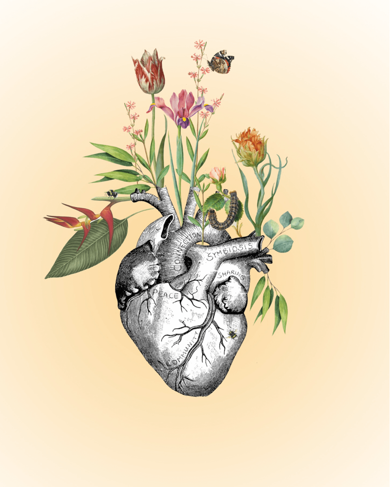
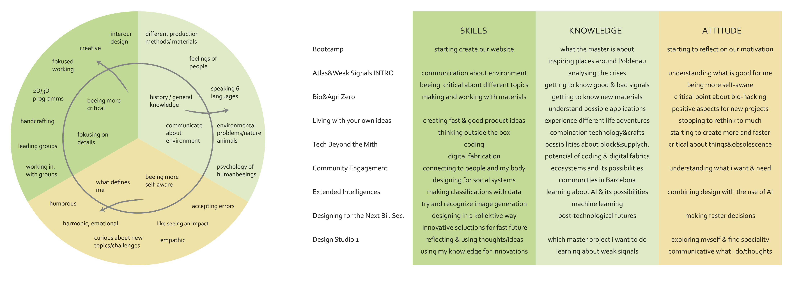

In the first week (Bootcamp) they showed us all the possibilities for our Master-project in Poblenau, IAAC, Elisava and the FadLab. Where we can study, borrow inspiring readings, code electronics, build prototypes and ask experts. It was a perfect start to get to know everything and where to ask people if you have any questions. For my coming masterproject I learned the importance of talking to people around you and build connections with them. It’s necessary to talk more about my ideas and thoughts to connect more with everybody and get more inspirations. Also inspirational proects for me are Rural Spark, African Green Tech, aqui.bcn, which shows different kind of solutions for helping our community. Also the projects could be something to help in Spain or Catalynia. What I explore for me is that I would like to show people for example in Barcelona the main issues of the planet in a nice and interesting way.
In this week we also start to reflect ourselves, which was really helpful. At the beginning of the course I was not sure, in which direction I want to focus on and had problems about reflecting myself, but in the first week I learned already a lot about it. Showing our fight was a really good start to think about what is important for me and go on with my first thinking’s/feelings. Also we defined our own attitudes/skills and knowledge and which one we want to get and the three aspects for what we expect from the first term of the master. In this master—program I would like to find out what I want and find my speciality. Explore what I really want and don't focus on what society want me to do, is what I want to focus on, explore myself and show my journey of experiences/projects. Think first smaller than bigger.
Connection and community, that´s my fight. This pictures shows on the one hand the mother earth with plants and animals and on the other hand the human life. I think it’s really important that we don’t lose the connection between the nature and ourselves. We are all together on the same planet and now see what problems we get when we act separately. Global warming, air pollution and world hunger for example are problems which comes from not connecting which each other. The world is full of products and trash caused from humans. I think it’s important now to think more about what we have, what we really need and what we can recycle. Acting more together instead of separately.
This exercise helped me to think about my personal skills, knowledge and attitude. I went through my passed experiences of work, education and myself. On the one hand I defined my current capabilities and on the other hand, which one I would like to have. The circle (left) shows my personal A.S.K.. The middle circle shows the things I would like to improve. In the right graphic you see the A.S.K. for the first term of the MDEF master, what we expect to learn.
